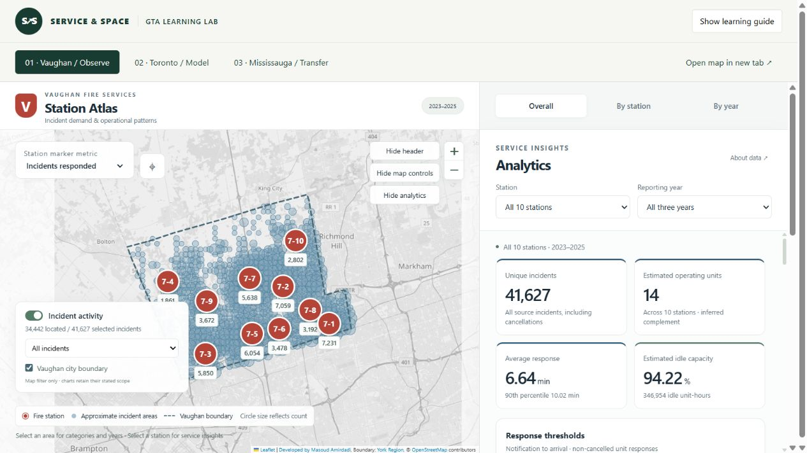
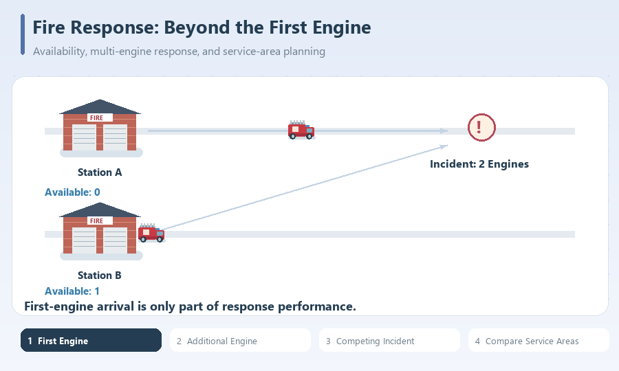
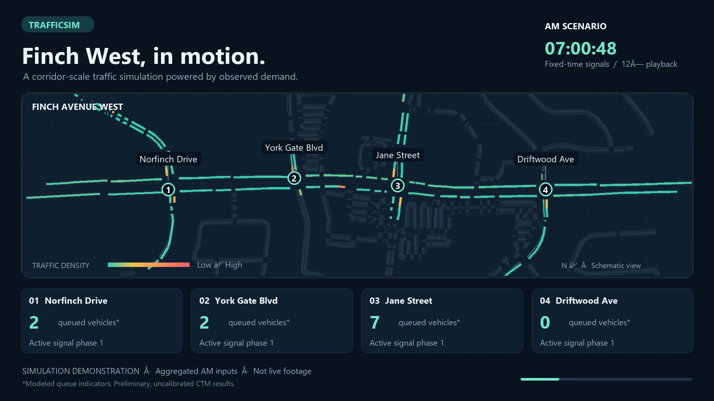
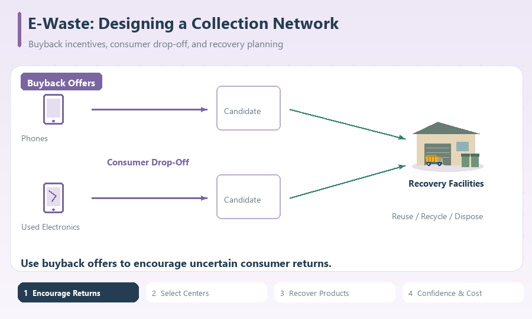
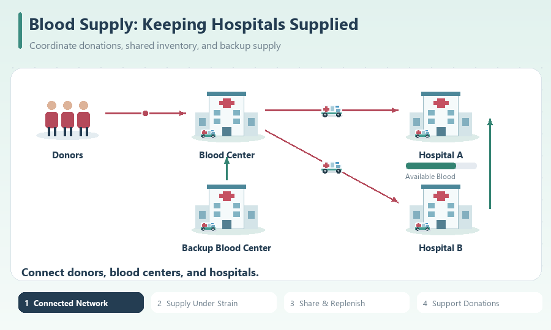

Hi, I’m Masoud Amirdadi
Ph.D. Candidate in Transportation Engineering
York University · Toronto, Canada
About
My background is in industrial engineering, with a research focus on operations research and transportation. I'm particularly interested in combining optimization, simulation, GIS, machine learning, and data-driven methods to understand complex systems and improve decision-making.
My recent work includes collaborating with Vaughan Fire and Rescue Service to evaluate fire service performance and develop GIS-based tools for spatial analysis and decision-making. I am also currently completing an internship with Ouster, focusing on LiDAR-based corridor traffic simulation and performance analysis. Previously, I completed an internship with the Regional Municipality of Durham, where I worked on integrating SUMO and Unity for 3D traffic simulation and visualization.
These experiences highlight how different analytical methods can be integrated to address practical challenges. For example, my Service & Space — GTA Learning Lab illustrates how GIS and spatial analysis can support emergency response planning.

Selected Research & Projects

Emergency Response
Queueing, optimization, and GIS for fire-service planning and post-crash care.
Explore Project ↗
Traffic Digital Twins
LiDAR-driven corridor simulation and traffic operations analysis.
Explore Project ↗
Reverse Logistics
Buyback incentives and collection-network design under uncertain product returns.
Explore Project ↗
Healthcare OR
Optimization for vaccine allocation, blood supply, and healthcare logistics.
Explore Project ↗